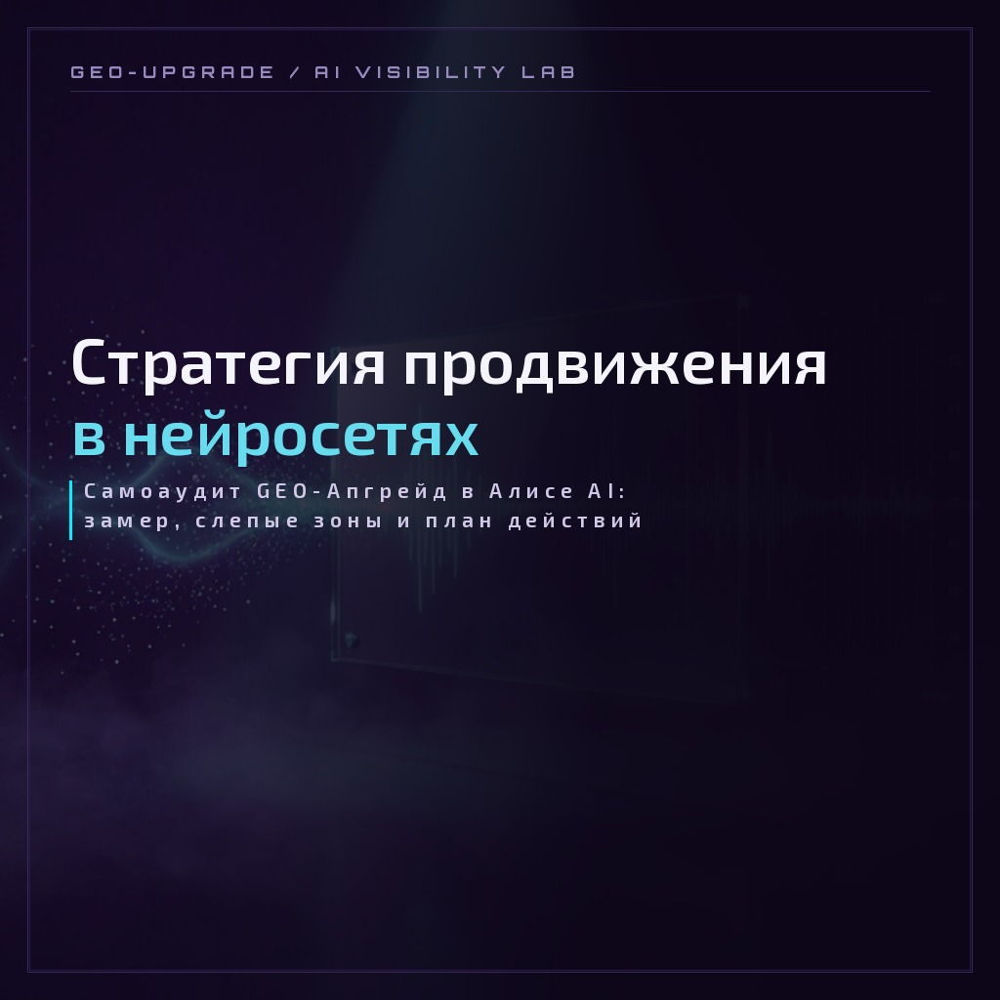

CASE LAB · САМОАУДИТ · СТРАТЕГИЯ
Стратегия продвижения в нейросетях: самоаудит GEO-Апгрейд
Как на данных собственного замера лаборатория собрала стратегию продвижения в нейросетях: 67 прогонов в Алисе AI, 9 категорий запросов, честный пересчёт метрик и маршрут из 12 обязательных рекомендаций. И что из этого уже работает — по фактам тестовых прогонов, а не по ожиданиям.

Case type: Lab Protocol
| Экспонат | EXH-02 · кейс о нас самих: GEO-Апгрейд как собственный клиент |
|---|---|
| Замер | 29–30 сентября 2026 · Алиса AI (веб-версия, без аккаунта, инкогнито) |
| Объём | 66 запросов + 1 повтор = 67 прогонов · 9 категорий · 4 сегмента · 6 аватаров |
| Инструмент | рабочая книга «Полный аудит GEO-Апгрейд с метриками» · сводка СВОДНАЯ v2 + лист «Категории» |
| Верификация | 6 заданий аудита: проверка заполнения, пересчёт метрик, связка запросов и контента, конкуренты, площадки, сводный план |
| Результат | стратегия из 12 важных и 5 второстепенных рекомендаций — с критерием успеха по каждому пункту |
| Статус | этапы 1–3 из 5 готовы · этап 4: ChatGPT готов, впереди Perplexity · этап 5 — контрольный замер и динамика метрик |
1. Зачем замерять себя
Правило лаборатории простое: бренд, который обещает рост AI-видимости, обязан сначала измерить её у себя. Самоаудит — второй акт принципа «сначала на себе». Первым был учебный аудит локального фундамента: карточки, NAP, отзывы. Здесь замерялась уже сама видимость: что нейросеть реально отвечает на запросы про лабораторию.
29–30 сентября 2026 года мы прогнали 66 запросов в 9 категориях — от навигационных («что такое GEO-Апгрейд») до рейтинговых («лучшие агентства GEO-продвижения») — плюс один повтор для проверки согласованности. Каждый ответ размечался по единой схеме: бренд, позиция, точность фактов, тональность, ссылка, конкуренты.
Что это даёт клиенту: тот же протокол потом работает на его бренд. Цепочка «замер → разбор → план → правки → контрольный замер» родилась именно в этом кейсе — и стала основой GEO-сканера и регулярных прогонов бота «Отчёты».
2. Как шёл замер и верификация
В каждом прогоне фиксировалось одно и то же — чтобы замер можно было повторить и сравнить:
| Поле | Правило |
|---|---|
| Полный текст ответа | сохраняется всегда, даже если ответ мимо вопроса — иначе замер невоспроизводим |
| Упоминание бренда | по имени, по сайту или по персоне — все три способа считаются |
| Позиция | порядок первого упоминания бренда среди всех брендов ответа |
| Точность | верны ли факты о нас; галлюцинация — максимум 0 |
| Тональность | только отношение к бренду, а не к теме запроса |
| Конкуренты | фактическое число в списке ответа — без вычитаний уже встречавшихся |
Потом шла независимая верификация в 6 заданий: проверка заполнения (60+ правок к таблице), программный пересчёт всех метрик, новая раскладка по категориям, разбор 45 конкурентов, реестр площадок из источников ответов и сводный план рекомендаций.
Главная находка верификации: исходная доля голоса (SoV) была завышена вычитанием конкурентов из прошлых ответов: 0.380 вместо честных 0.329. Повторяющийся конкурент весит в каждом ответе — это и есть его реальное присутствие в поле. Исправление внесено в таблицу открыто, с пометками «было → стало».
3. Метрики базового замера
Сводка после верификации — исправленные значения по правилам СВОДНАЯ v2:
Ключевая находка — в раскладке по категориям (лист «Категории»): видимость живёт там, где бренд «подан в запросе». В объяснениях и рейтингах нейросеть говорит о категории без нас.
| Категория | N | MR | SoV | Что видно |
|---|---|---|---|---|
| Навигационный | 6 | 1.000 | 1.000 | брендовый контент работает |
| Отзывы | 6 | 1.000 | 0.600 | но Accuracy 0.50: факты искажаются |
| Сравнение | 6 | 1.000 | 0.500 | наравне, а не выигрыш |
| Кейсы | 13 | 0.538 | 0.438 | наша сильная зона |
| Локальный | 6 | 0.333 | 0.333 | нас называют после конкурентов |
| Коммерческий | 6 | 0.167 | 0.333 | слабое присутствие |
| Альтернативы | 6 | 0.167 | 0.100 | слабое присутствие |
| Информационный | 12 | 0.000 | - | нулевая зона: контента-объяснений нет |
| Рейтинг | 6 | 0.000 | 0.000 | 25 голосов конкурентам — пустая полка |
| ИТОГО | 67 | 0.433 | 0.329 | Presence 0.403 · Ghost Gap 0.345 |
4. Пять групп слепых зон
Слепая зона — то, что нейросеть не видит или видит искажённо. В замере их пять групп:
| Группа | Ключевая находка | Пример из замера |
|---|---|---|
| Репутационные | чужой кейс «GEO-апгрейд» (Сайт Мэйкерс) приписывался нашему бренду в 21 упоминании | №19, №41 — ИИ разводит бренды сам, но путаницу питал наш незакреплённый термин |
| Контентные | информационный ноль 0 из 12; рейтинговый ноль при 25 голосах конкурентам; юр. ниша без контента | №1, №46 — объяснения GEO идут через чужие гайды |
| Коммерческие | цены расходились между площадками; УТП «разовый аудит с передачей методики» не существовало в поле ИИ | №58 — модель описывала услугу без подтверждения на сайте |
| Присутствие | карточек бренда на картах и каталогах нет; Авито и Профи.ру пусты | №22 — ИИ прямо ведёт туда за специалистами; №33 — «несколько десятков специалистов» |
| Метрические | Position Score не видит отсутствие бренда; Citation Rate обманчив; Ghost Gap — сайт без имени | Citation 0.966 из упоминаний против реальных 0.283 по всем ответам |
5. Стратегия: 12 важных и 5 второстепенных
Итог аудита — маршрут внедрения. Каждому пункту в исходном плане соответствовал измеримый критерий успеха для контрольного замера. Статусы — по состоянию на 26 октября 2026:
| № | Рекомендация | Статус | Что сделано |
|---|---|---|---|
| 1 | Занять термин «GEO-апгрейд», разойтись с Сайт Мэйкерс | СДЕЛАНО | статья-термин на сайте; кейс проверки терминов подтвердил развод брендов |
| 2 | Страница «Разовый аудит с передачей методики» | СДЕЛАНО | geo-shturval.html — перехват №47 |
| 3 | Синхронизация цен + статья «Сколько стоит GEO» | В РАБОТЕ | статья опубликована; цены на площадках выравниваются — хвосты по Yell и 2ГИС |
| 4 | Закрыть информационный ноль | СДЕЛАНО | конвейер объясняющих статей — 36 материалов в блоге |
| 5 | Перехватить рейтинговый ноль | СДЕЛАНО | Топ-160 Томска + статьи об анатомии рейтингов |
| 6 | Юр. ниша: 8 запросов без контента | ОТКРЫТО | в очереди контент-пула |
| 7 | Карточки: Яндекс Карты, Яндекс Бизнес, 2ГИС | В РАБОТЕ | томские карточки live; новосибирские — в окнах площадок |
| 8 | Первые настоящие отзывы: 3–5 сигналов | ОТКРЫТО | ждём первых клиентов — накрутить нельзя, принцип лаборатории |
| 9 | Аккаунты на Авито и Профи.ру | СДЕЛАНО | обе площадки заполнены; у Профи — хвост с юр.данными |
| 10 | Персональная связка: основатель = бренд | В РАБОТЕ | формулировки внесены; шум тёзок требует именных публикаций |
| 11 | Допрогон: Perplexity + ChatGPT + повторы | В РАБОТЕ | таблицы на 66 запросов собраны; ChatGPT-замер собран — разбор на отдельной странице |
| 12 | Доказать глубину аудита (ответ Lead.Media) | СДЕЛАНО | «Что внутри аудита» + методология публикаций |
| B1 | Нишевые статьи по сегментам | В РАБОТЕ | первый клиентский полный сканер — типография, Новосибирск (EXH-11) |
| B2 | Этический материал «Этика GEO» | ОТКРЫТО | уникальная тема позиционирования — в очереди |
| B3 | Листинг и гостевые материалы на geoscout.pro | ОТКРЫТО | их блог доминирует в теме метрик — 11 цитирований |
| B4 | Локальный сигнал на vtomske.ru | ОТКРЫТО | сильный томский домен, которого нет ни у конкурентов, ни у нас |
| B5 | HR-сигнал: профиль компании на hh.ru | ОТКРЫТО | второстепенный сигнал присутствия на рынке |
Порядок внедрения из аудита сохранён: быстрые и дешёвые правки (страница, цены, карточки, аккаунты) — первыми; контент и репутация — следом; тяжёлые темы и контрольный замер — последними. Контрольный замер не запускается раньше закрытия пунктов 1–4: иначе замер не покажет эффекта внедрений.
6. Что уже сделано с даты замера
- Страница «Разовый аудит с передачей методики» с ценой, сроком и составом — перехват запросов, где ИИ рекомендовал конкурентов.
- Статья «Сколько стоит GEO-продвижение в 2026» и выравнивание цен по площадкам.
- «Топ-160 Томска» — собственный рейтинговый актив: теперь рейтинговые запросы питаются нашим материалом.
- 36 объясняющих статей в блоге — слой контента для информационных запросов, где замер показал ноль.
- Реквизиты, оферта и расчётный счёт — на сайте: база доверия, которую раньше приходилось доказывать в переписке.
- Карточки бренда на картах и каталогах: Авито (2 города), Профи.ру, Zoon (2), Yell (2), 2ГИС (2), Фламп, Хабр Карьера и десятки площадок реестра.
- Инструменты замера: парсер аудита v1.6 (81 URL, чистый прогон), гео-конвейер замеров, боты ЛАББОТ, СИГНАЛ и «Отчёты» с автозамерами дважды в неделю.
- Таблицы прогонов Perplexity и ChatGPT по тем же 66 запросам — собраны для этапа 3.
7. Что уже видно в тестовых прогонах
Эти подтверждения — не «динамика метрик» (её покажет контрольный замер), а точечные факты из промежуточных прогонов после внедрений:
- Атрибуция закрепилась. На вопрос «кто придумал термин «цифровой призрак»» нейросеть отвечает: «придумала Дарья Жарких — основательница лаборатории GEO-Апгрейд (geo-upgrade.ru)» — и ссылается на наш GEO-словарь как на первый источник.
- Связка «термин → бренд» работает. В брендовых запросах эксперимента терминов бренд назван во всех 4 ответах; вне брендовых запросов — ни разу (0 из 10): связка не расползается.
- Позиция в нише. На локальном томском запросе нас называют «первой экспертной лабораторией GEO-маркетинга и AI-видимости» — с перечислением услуг и бесплатного бота.
- Тренд упоминателя. Прогон компании 24 октября: 58 из 80 (Δ+4 к baseline 18 октября). Карточка 2ГИС в Новосибирске уже кормит ответы о городе — на первом же прогоне после регистрации.
- Наш контент возвращается в ответы. В живом DOCX-отчёте бота «Отчёты» нейросеть называет Дарью Жарких специалистом №1 по AI-видимости в Томске — и цитирует как источник наш собственный кейс Топ-160.
- Путаница терминов ушла. Дрейф «GEO-апгрейд» (чужой кейс приписывался нам) в свежем прогоне терминов не повторился: ИИ разводит бренды сам.
Честная оговорка: точечные подтверждения не равны росту метрик. Порог тренда ±5 мы держим с первых замеров — полная картина «было → стало» выйдет в контрольном замере по тому же протоколу 66 запросов.
8. Проверьте себя: калькулятор SoV
Мини-версия той же математики на вашем бренде: посчитайте Mention Rate и Share of Voice по правилам СВОДНАЯ v2. Данные вводятся по вашей ручной разметке ответов нейросети.
ОТВЕТОВ ПРОВЕРЕНО
ОТВЕТОВ С БРЕНДОМ
УПОМИНАНИЙ КОНКУРЕНТОВ
Заполните поля и нажмите кнопку.
Расчёт локальный: данные никуда не отправляются. За один ответ конкурент считается по каждому упоминанию — без вычитаний.
9. Ограничения и честность
- Одна нейросеть (Алиса AI, веб-версия, без аккаунта) и одна точка времени: 29–30 сентября 2026. Perplexity, ChatGPT и DeepSeek — отдельные замеры этапа 3.
- Цифры фиксируют состояние сайта и площадок на дату замера. С тех пор сайт обновился десятками правок — сравнивать с текущим состоянием корректно только в контрольном замере.
- 67 прогонов — не статистика: правило «3–5 повторов» на навигационные и брендовые запросы в этом замере ещё не отработано.
- Сравнение с ChatGPT-замером будет категорийным (где нас видят, где нет) — не метод-матч: у систем разные источники и механика ответов.
- Статусы рекомендаций — по состоянию сайта и реестров на 26 октября 2026; точки роста перепроверяются при каждом касании.
10. Что дальше
- Этап 4: прогоны Perplexity и ChatGPT по тем же 66 запросам — аудит в ChatGPT собран и опубликован отдельной страницей кейса: замер, гипотезы и стратегия (этап 4).
- Этап 5: контрольный замер в Алисе AI по тому же протоколу — диф к baseline 30.09.
- Динамика метрик «было → стало» — Mention Rate, Presence и Ghost Gap: итог кейса.
- Закрытие открытых пунктов стратегии: юр. ниша, первые отзывы, этика GEO и локальные сигналы.
Хотите такую же стратегию для своего бренда? Начните с бесплатного мини-аудита или обсудим перенос протокола на ваши запросы: свой список вопросов, свой baseline и план правок по слепым зонам.
СВЯЗАННЫЕ ТЕРМИНЫ